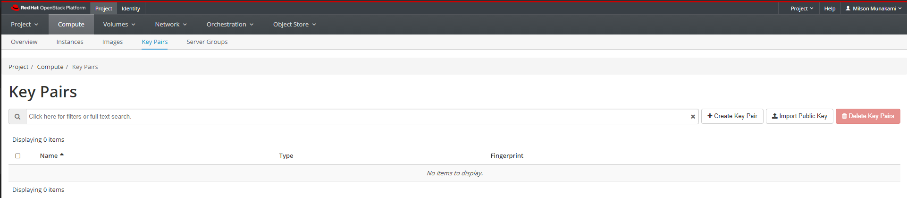
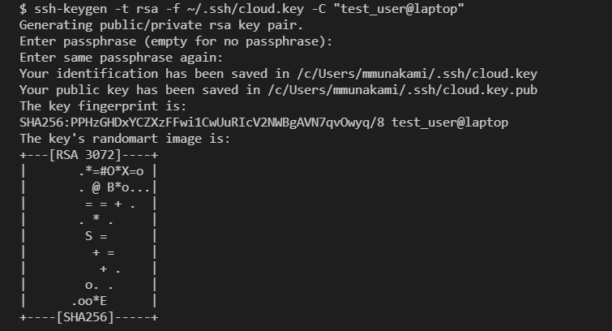
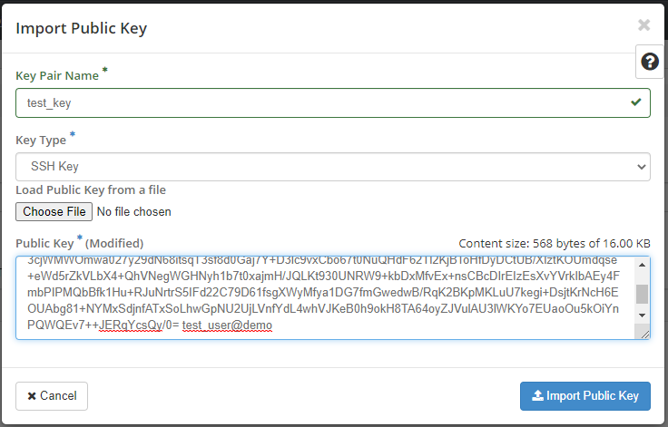
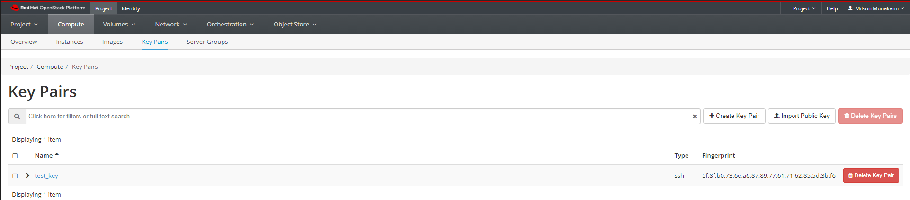
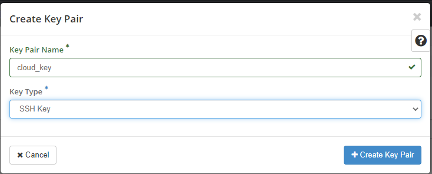
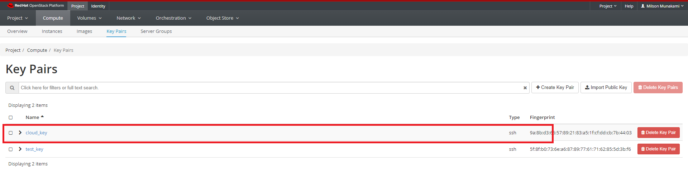
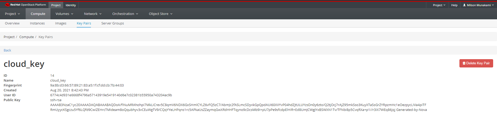

Create a Key-pair
NOTE
If you will be using PuTTY on Windows, please read this first.
Add a Key Pair
For security, the VM images have password authentication disabled by default, so you will need to use an SSH key pair to log in.
You can view key pairs by clicking Project, then click Compute panel and choose Key Pairs from the tabs that appears. This shows the key pairs that are available for this project.

Import a Key Pair
Prerequisite
You need ssh installed in your system
You can create a key pair on your local machine, then upload the public key to the cloud. This is the recommended method.
Open a terminal and type the following commands (in this example, we have named the key cloud.key, but you can name it anything you want):
cd ~/.ssh
ssh-keygen -t rsa -f ~/.ssh/cloud.key -C "label_your_key"
Example:

You will be prompted to create a passphrase for the key. IMPORTANT: Do not forget the passphrase! If you do, you will be unable to use your key.
This process creates two files in your .ssh folder:
cloud.key # private key - don’t share this with anyone, and never upload
# it anywhere ever
cloud.key.pub # this is your public key
Pro Tip
The -C "label" field is not required, but it is useful to quickly identify
different public keys later.
You could use your email address as the label, or a user@host tag that identifies the computer the key is for.
For example, if Bob has both a laptop and a desktop computer that he will, he might use -C "Bob@laptop" to label the key he generates on the laptop, and -C "Bob@desktop" for the desktop.*
On your terminal:
pbcopy < ~/.ssh/cloud.key.pub #copies the contents of public key to your clipboard
Pro Tip
If pbcopy isn't working, you can locate the hidden .ssh folder, open the
file in your favorite text editor, and copy it to your clipboard.
Go back to the Openstack Dashboard, where you should still be on the Key Pairs tab
(If not, find it under Project -> Compute -> Key Pairs)
Choose "Import Public Key". Give the key a name in the "Key Pair Name" Box, choose "SSH Key" as the Key Type dropdown option and paste the public key that you just copied in the "Public Key" text box.

Click "Import Public Key". You will see your key pair appear in the list.

You can now skip ahead to Adding the key to an ssh-agent.
Create a Key Pair
If you are having trouble creating a key pair with the instructions above, the Openstack dashboard can make one for you.
Click "Create a Key Pair", and enter a name for the key pair.

Click on "Create a Key Pair" button. You will be prompted to download a .pem
file containing your private key.
In the example, we have named the key 'cloud_key.pem', but you can name it anything.
Save this file to your hard drive, for example in your Downloads folder.
Copy this key inside the .ssh folder on your local machine/laptop, using the
following steps:
cd ~/Downloads # Navigate to the folder where you saved the .pem file
mv cloud.pem ~/.ssh/ # This command will copy the key you downloaded to
# your .ssh folder.
cd ~/.ssh # Navigate to your .ssh folder
chmod 400 cloud.pem # Change the permissions of the file
To see your public key, navigate to Project -> Compute -> Key Pairs
You should see your key in the list.

If you click on the name of the newly added key, you will see a screen of information that includes details about your public key:

The public key is the part of the key you distribute to VMs and remote servers.
You may find it convenient to paste it into a file inside your .ssh folder,
so you don't always need to log into the website to see it.
Call the file something like cloud_key.pub to distinguish it from your
private key.
Important: Never share your private key with anyone, or upload it to a server!
Adding your SSH key to the ssh-agent
If you have many VMs, you will most likely be using one or two VMs with public IPs as a gateway to others which are not reachable from the internet.
In order to be able to use your key for multiple SSH hops, do NOT copy your private key to the gateway VM!
The correct method to use Agent Forwarding, which adds the key to an ssh-agent on your local machine and 'forwards' it over the SSH connection.
If ssh-agent is not already running in background, you need to start the ssh-agent in the background.
eval "$(ssh-agent -s)"
> Agent pid 59566
Then, add the key to your ssh agent:
cd ~/.ssh
ssh-add cloud.key
Identity added: cloud.key (test_user@laptop)
Check that it is added with the command
ssh-add -l
2048 SHA256:D0DLuODzs15j2OaZnA8I52aEeY3exRT2PCsUyAXgI24 test_user@laptop (RSA)
Depending on your system, you might have to repeat these steps after you reboot or log out of your computer.
You can always check if your ssh key is added by running the ssh-add -l command.
A key with the default name id_rsa will be added by default at login, although you will still need to unlock it with your passphrase the first time you use it.
Once the key is added, you will be able to forward it over an SSH connection, like this:
ssh -A -i cloud.key <username>@<remote-host-IP>
Connecting via SSH is discussed in more detail later in the tutorial (SSH to Cloud VM); for now, just proceed to the next step below.
SSH keys with PuTTY on Windows
PuTTY requires SSH keys to be in its own ppk format. To convert between
OpenSSH keys used by OpenStack and PuTTY's format, you need a utility called PuTTYgen.
If it was not installed when you originally installed PuTTY, you can get it here: Download PuTTY.
You have 2 options for generating keys that will work with PuTTY:
- Generate an OpenSSH key with ssh-keygen or from the Horizon GUI using the instructions above, then use PuTTYgen to convert the private key to .ppk
- Generate a .ppk key with PuTTYgen, and import the provided OpenSSH public key to OpenStack using the 'Import a Key Pair' instructions above.
There is a detailed walkthrough of how to use PuTTYgen here: Use SSH Keys with PuTTY on Windows.